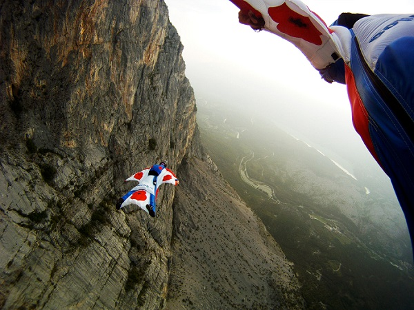

This page is in English

AFF-course
is an accelerated skydiving program. At the moment, she is the fastest and at the same time the safest way to
learn to jump on your own. This is a kind of "gold standard" accepted all over the world. Thanks to it, absolutely
any person in just a few days can master the technique of free fall and control of a wing-type canopy.
The uniqueness of the AFF program is that from the very first jump, the novice parachutist
finds himself in real conditions. For this, a special student system is used, the only difference from a sports
wing is a duplicated system of automatic parachute deployment.
At any given time, in the air and on the ground, there are two individual instructors next to the student.
This means that all possible mistakes are corrected on the spot and progress is much faster than in the outdated
classical training system, where the instructor observes from the plane, and the student is left with a foreign
environment one-on-one.
The height of each jump is 4000 meters.
In this case, the net free fall time is 60 seconds. In other words, a whole minute to work out all the
training elements. This allows you to significantly save time, and hence money, on training.
All training jumps are recorded on a video camera and carefully analyzed in slow motion. This “work on mistakes”
helps to better prepare for the next jump, completely eliminating the reinforcement of wrong skills.